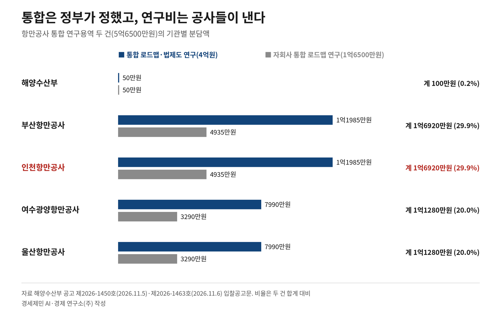

[인천해양주권⑯] 해수부 인천항만공사 청산용역, 인천항만공사 돈으로
결정은 정부가, 설계비는 공사가…연구 두 건 16·17일 마감
과업에 적힌 '지역 자율성'…통합 않는 길도 견줘야
AI경제저널=김갑봉 기자 | 해양수산부가 2026년 11월 5일과 6일 항만공사 통합 연구용역 두 건을 긴급공고로 냈다. 두 용역 예산을 더하면 5억6500만원이다. 이 가운데 해양수산부는 100만원을, 인천항만공사는 1억6920만원을 낸다.
9월 3일 통합 발표 뒤 두 달 만에 통합을 설계할 연구가 입찰에 나왔다. 과업에는 기존 항만공사의 전환 방안과 지사 직제(안), 법인 해산·통합에 따른 재산과 권리·의무 승계 검토가 들어 있다.
과업지시서에 '청산'이라는 낱말은 없다. 그런데 정부가 9월 3일 밝힌 대로 지금의 공사를 지역지사로 바꾸면, 인천항만공사라는 법인은 해산되고 재산과 사업은 통합 법인이 넘겨받는다. 2005년 문을 연 인천의 독립 법인을 지우는 설계를 인천항만공사 돈으로 짜는 셈법이다.
두 공고의 입찰공고문과 과업지시서를 읽고, 누가 정하고 누가 값을 치르는지 사실로 짚는다.
연구비 5억6500만원, 해수부 몫 100만원
첫 공고는 11월 5일 나온 해양수산부 공고 제2026-1450호다. 이름은 '항만공사 통합 로드맵 수립 및 법·제도 정비 방안 연구'다. 예산은 4억원이고 기간은 계약일부터 여덟 달이다.
참가 자격도 남다르다. 학술연구용역 업체에 더해 법무법인·변호사사무소 같은 법무 쪽 업체와 회계법인이 함께 들어와야 한다. 법률 개정안과 통합 재무제표까지 한 번에 만들라는 주문이다.
이튿날 공고 제2026-1463호가 뒤따랐다. 항만공사 자회사 다섯의 통합 로드맵 연구다. 예산은 1억6500만원, 기간은 여섯 달이다.
입찰은 각각 11월 16일과 17일 오전 10시에 마감한다. 두 공고 모두 제목에 '긴급'을 달았다. 두 연구 모두 계약 뒤 열흘 안에 일을 시작해야 한다.
공고문은 두 연구를 국가계약법 제24조 종합계약에 따른 공동발주라고 적었다. 관련 기관이 함께 발주하는 계약이다. 발주기관은 해양수산부와 부산·인천·울산·여수광양 항만공사를 더해 다섯 곳이다.
4억원짜리 통합 연구에서 해양수산부 몫은 50만원이다. 부산항만공사와 인천항만공사가 1억1985만원씩, 여수광양항만공사와 울산항만공사가 7990만원씩 낸다. 자회사 연구에서도 해양수산부는 50만원을 낸다. 부산과 인천이 4935만원씩, 여수광양과 울산이 3290만원씩이다.
두 건을 더하면 인천항만공사 몫은 1억6920만원으로 전체의 29.9%다. 해양수산부 몫 100만원은 0.2%에 못 미친다. 경세제민 AI·경제 연구소(주) 계산이다.
통합은 정부가 정했고, 통합을 설계할 돈은 통합될 공사들이 댄다.

통합 결정 두 달 뒤 '중복·경합 기능' 분석
통합 연구 과업지시서는 배경부터 적었다. 정부 공공기관 기능 개혁 방향에 따라 항만공사 넷과 자회사 다섯의 통합 방침이 9월 3일 결정됐다는 내용이다.
지시서는 "정부 발표는 기본 방향만 정한 것"이라고 썼다. 그래서 단계적 실행 방안과 법·제도 정비 방안이 필요하다고 했다. 전담조직을 꾸리고 연구와 자문, 이해관계자 의견수렴을 거쳐 방안을 내겠다는 계획도 함께 적었다.
과업 첫 항목은 현황 진단이다. 항만별 화종·배후산업·고객 같은 지역 특수성을 보고, 항만 사이에 겹치거나 다투는 기능을 분석하라고 했다. 화종은 항만이 다루는 화물의 종류다. 통합 결정은 9월 3일이고, 네 항만이 같은 일을 하는지 따지는 연구는 이제 입찰에 나왔다.
둘째 항목은 통합의 정의다. 범위와 수준, 지역 역할을 고려해 통합의 개념을 정하라고 했다. 셋째 항목 통합유형 비교는 해외 항만공사 운영 사례와 해외 항만통합 사례를 본다. 국내 공공기관 통합 사례도 분석해 통합 수준별 시나리오를 세우라고 했다. 무엇을 얼마나 합칠지가 아직 연구 과제로 남아 있다.
통합의 경제적 효과도 이번 연구가 셈한다. 대안별 긍정적 효과와 부정적 효과, 이행비용을 반영한 연차별 현금흐름을 내라는 과업이다.
일정도 맞물린다. 연구는 계약일부터 여덟 달 걸린다. 같은 지시서는 2027년 초까지 통합 추진방안을 발표할 예정이라고 적었다. 11월 말에 계약해도 연구는 2027년 7월께 끝난다. 연구가 끝나기 전에 방안 발표 시점이 온다.
지시서 맨 끝 과업은 「공공기관의 운영에 관한 법률」 제7조에 따른 신설기관 심사 업무 지원이다. 통합 법인을 새 공공기관으로 세우는 절차까지 이 연구가 돕는다.
과업에 적힌 지역 자율성·지역 재투자
통합 조직을 설계하는 과업에는 거버넌스와 지역 자율성 보장이 들어 있다. 기존 항만공사 기능과 권한을 어떻게 나눌지도 다룬다. 자원 전환 과업에서는 본사와 지사의 정원 배분을 본다.
재무 과업은 지역별 구분회계와 투자배분·지역 재투자 원칙을 다루라고 했다. 구분회계는 한 법인 안에서 지역마다 장부를 따로 두는 방식이다. 법 개정안 과업에는 지역지사와 지역대표성이 나온다.
지역 몫과 맞닿은 낱말들이 과업지시서 곳곳에 들어 있다.
법·제도 정비 과업에는 '입법 일정과 국회·지자체 대응 방안'도 있다. 인천항만공사가 연구비의 30% 가까이를 대는 연구가 인천시를 비롯한 지자체와 국회를 상대할 방안까지 짠다.
항만시설관리권을 현물로 출자하는 효과도 따진다. 항만법 제24조가 정한 항만시설관리권은 항만시설을 유지·관리하고, 그 시설을 쓰는 이에게서 사용료를 받는 권리다. 항만공사법 제6조는 국가와 지방자치단체가 이 관리권을 공사에 출자할 수 있게 한다.
진행 중인 개발사업과 임대계약, 해외사업을 통합 법인이 어떻게 이어받을지도 과업이다. ERP와 항만 운영 전산인 Port-MIS를 하나로 합치는 방향도 내야 한다.
재무 과업에는 중장기 부채관리와 함께 비핵심자산 매각, 수입 다각화 같은 재무구조 개선을 제언하라는 주문도 있다.
무엇이 비핵심인지 연구는 제언하고, 받아들일지는 발주자 몫이다.
사람의 일도 다룬다. 네 공사와 자회사의 직급·보수·복리후생·단체협약을 견주고, 근무지와 전보, 승진·평가 기준을 하나로 맞추는 방향을 검토한다. 고용승계 범위와 불리한 근로조건을 막을 기준도 과업이다.
인천항보안공사, 엑스포 관리사와 한 묶음
자회사 연구의 대상은 네 항만공사가 세운 회사 다섯이다. 이름에 '보안공사'가 붙은 곳이 부산과 인천에 하나씩, '항만관리'가 붙은 곳이 울산과 여수광양에 하나씩이다. 나머지 하나가 여수엑스포관리다.
인천항보안공사는 인천항만공사가 세운 보안 자회사다. 공고문은 이 연구에 항만 보안, 항만시설 관리, 엑스포시설 관리를 함께 이해하는 전문성이 필요하다고 적었다.
과업은 단일법인을 새로 세우는 안과 기존법인 중심으로 합치는 안을 견주라고 했다. 방식마다 고용승계 쟁점과 모회사에 미치는 영향도 따진다.
경비·보안과 시설관리는 교대근무와 상시 운영이 많은 일이다. 지시서는 이 특성을 반영해 적정 인력 규모와 배치 기준을 검토하라고 했다.
자회사 노조는 이 논의에서 직원들이 빠졌다고 말한다. 한국항만보안시설공단노동조합은 11월 4일 항만공사마다 세 명씩 파견받아 꾸린 해수부 전담팀(TF)에서 자회사 직원은 협의 기회도 얻지 못했다고 주장했다.
김혜정 해양수산부 해운물류국장은 자회사 통합은 모회사인 항만공사 통합 방향이 정해져야 추진할 수 있다고 답했다. 방향이 확정되면 자회사 직원을 통합 추진반에 파견하고 의견수렴을 거쳐 로드맵을 마련하겠다고 했다.
자회사 연구 본공고는 노조 주장 이틀 뒤 나왔다. 과업지시서는 모회사 통합 일정과 이어지는 자회사 통합 추진체계를 마련하라고 했다. 항만보안·시설관리 운영체계를 일원화하는 단계도 검토 대상이다.
모회사 통합의 구체 방향이 나오기 전에 자회사 통합 설계도 함께 출발했다. 기간은 자회사 연구가 두 달 짧다.
공동 발주자 인천, 연구 방향을 말하라
두 지시서는 연구 결과를 모두 발주자 소유로 둔다. 참여자는 보안각서를 내고, 승인 없이 자료를 밖에 내지 못한다. 결과를 공개할지는 발주자 손에 달렸다.
인천항만공사는 그 발주기관 가운데 하나다.
여기서부터는 필자의 판단이다.
연구비의 30% 가까이를 대는 인천항만공사는 과업 방향에 의견을 낼 자리에 있다. 11월 2일 취임한 박인서 사장 앞에 놓인 첫 숙제다.
박 사장은 인천 출신으로 인천도시공사 사장과 인천시 균형발전정무부시장을 지냈다. 그는 취임 날 기자간담회에서 통합에 견해가 엇갈리는 만큼 충분한 논의가 필요하다고 했다. 관계부처 협의뿐 아니라 지역사회 의견을 듣는 과정도 있어야 한다는 취지였다.
필자는 통합유형을 견주는 과업에 '통합하지 않는 안'을 넣으라고 요구해야 한다고 본다. 항만공사법 제36조의2의 항만공사운영협의회처럼 법인은 두고 손발을 맞추는 길이다.
지역 재투자와 구분회계는 정관이 아니라 법률 조문에 담아야 한다고 본다. 인천항에서 번 돈이 인천항에 다시 쓰이는지 장부로 드러나야 한다.
보안 자회사는 엑스포 시설 관리와 같은 저울에 올릴 일이 아니라고 본다. 남북 뱃길이 다시 열리면 인천항 보안이 그 길목이 된다. 필자는 갑문 안 내항이 북한 배를 맞기에 가장 안전한 자리라고 본다. 그 문을 지키는 조직의 무게를 따로 달아야 한다.
이 연구가 지역별 공청회를 열면 인천시는 공식 의견을 내야 한다. 정부 일정은 2027년 초를 향해 가고 있고, 인천이 말하지 않으면 인천항의 몫은 남이 그린 설계도에 적힌다.
참고문헌
- 해양수산부(2026), 「항만공사 통합 로드맵 수립 및 법 제도 정비 방안 연구」 용역 입찰 공고(긴급), 해양수산부 공고 제2026-1450호, 2026.11.05. 나라장터 공고번호 R26BK01813256.
- 해양수산부·부산·인천·여수광양·울산항만공사(2026), 『항만공사 통합 로드맵 수립 및 법·제도 정비 방안 연구 과업지시서』, 2026.10. 나라장터 R26BK01813256 첨부.
- 해양수산부(2026), 「항만공사 자회사 통합 로드맵 수립 연구용역」 용역 입찰 공고(긴급), 해양수산부 공고 제2026-1463호, 2026.11.06. 나라장터 공고번호 R26BK01814961.
- 해양수산부·부산·인천·여수광양·울산항만공사(2026), 『항만공사 자회사 통합 로드맵 수립 연구용역 과업지시서』, 2026.11. 나라장터 R26BK01814961 첨부.
- 『국가를 당사자로 하는 계약에 관한 법률』 제24조 종합계약. 국가법령정보센터. https://www.law.go.kr/법령/국가를당사자로하는계약에관한법률
- 『공공기관의 운영에 관한 법률』 제7조 기관 신설에 대한 심사. 국가법령정보센터. https://www.law.go.kr/법령/공공기관의운영에관한법률
- 『항만공사법』 제6조 출자, 제36조의2 항만공사운영협의회. 국가법령정보센터. https://www.law.go.kr/법령/항만공사법
- 『항만법』 제24조 항만시설관리권. 국가법령정보센터. https://www.law.go.kr/법령/항만법
- 인천항만공사(2026), 「박인서 IPA 제8대 사장 취임, 첫날부터 현장경영 본격화」 보도자료, 2026.11.02. https://www.icpa.or.kr/article/view.do?articleKey=33028&boardKey=217&menuKey=3996
- 김주엽(2026), "[인터뷰] 박인서 인천항만공사 신임 사장 '항만공사 통합, 지역사회 의견 수렴해야'", 『경인일보』, 2026.11.02. https://www.kyeongin.com/article/1773889
- 정시환(2026), "해양수산부, 항만보안 자회사 통합 논의에 직원 의견 수렴 약속", 『스페셜타임스』, 2026.11.04. https://www.specialtimes.co.kr/news/articleView.html?idxno=481587
[사진·도표 출처]
- [사진 1] 인천광역시, 「인천항 인천항내부전경」(촬영연도 2020), 공공누리 제1유형(출처표시). https://www.kogl.or.kr/recommend/recommendDivView.do?recommendIdx=32805&division=img
- [도표 1] 경세제민 AI·경제 연구소(주) 작성. 자료 해양수산부 공고 제2026-1450호·제2026-1463호 입찰공고문.
※ 이 기사는 AI 프로그램 클로드를 활용해 작성했습니다.
관련기사
- [인천해양주권⑮] 인천항 투자 65% 줄 때 부산항은 84% 늘었다
- [인천해양주권⑭] 항만공사 통합에 기업청산만 바라보는 인천
- [인천해양주권⑬] 효과 분석 없는 항만공사 통합, 해법은 협력과 분권
- [인천해양주권⑫] 7월엔 '권역별 특화', 9월엔 '같은 기능'
저작권자 © AI경제저널 무단전재 및 재배포, AI학습 및 활용 금지